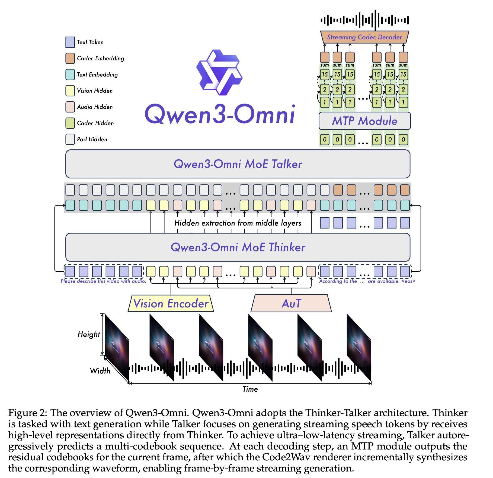
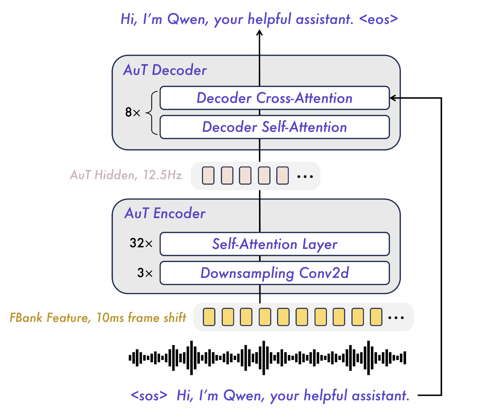

Models
LLMs Timeline
Qwen3-Omni
Overview

Qwen3-Omni-30B-A3B is interesting because it is not just a vision-language model with an extra speech head. It tries to unify text, image, audio, and video perception with both text and speech generation in one deployment stack. That makes it a useful model to study whenever the question is not only "how does a multimodal backbone work," but also "how are perception and real-time speech output coupled in one system."
At a high level, Qwen3-Omni uses a Thinker-Talker split:
- The Thinker is the main multimodal reasoning backbone. It consumes text, image, audio, and video inputs and produces the semantic representation used for understanding and text generation.
- The Talker is the speech generation side. It predicts codec tokens autoregressively and then reconstructs waveform through
Code2Wav.
This separation matters because it turns omni-modal generation into a systems problem rather than only a backbone problem. The model can reason over multiple modalities while keeping the speech synthesis path optimized for streaming.
Architectural Features
- Both the Thinker and Talker use Mixture-of-Experts (MoE) designs.
- The text backbone in the Thinker is a 48-layer MoE decoder with 128 experts and 8 active experts per token.
- The text attention pattern is GQA, not MHA or MLA: the config exposes 32 query heads and 4 KV heads.
- The vision stack is a ViT-like encoder with
depth = 27,hidden_size = 1152,num_heads = 16, anddeepstack_visual_indexes = [8, 16, 24]. - The audio tower is a 32-layer Transformer encoder with
d_model = 1280,encoder_attention_heads = 20, andencoder_ffn_dim = 5120. - The Talker uses a multi-codebook codec generation path with 16 code groups / quantizers.
Code2Wavis a lightweight causal ConvNet rather than a heavier diffusion-style decoder.
These numbers come directly from the public Hugging Face config for Qwen/Qwen3-Omni-30B-A3B-Instruct.
Structural Summary
| Module | Key structure | What to remember |
|---|---|---|
| Thinker text backbone | 48-layer MoE decoder, hidden_size = 2048, 32 attention heads, 4 KV heads, 128 experts, 8 active experts |
Narrow backbone plus heavy MoE; text attention is GQA |
| Vision encoder | ViT-like encoder, depth = 27, hidden_size = 1152, num_heads = 16, patch_size = 16 |
Closer in spirit to the Qwen3-VL family than to a lightweight side encoder |
| Audio encoder | Transformer encoder, encoder_layers = 32, d_model = 1280, encoder_attention_heads = 20 |
Dense audio tower for perception, separate from the text backbone |
| Talker text stack | 20-layer MoE decoder, hidden_size = 1024, 16 heads, 2 KV heads |
Speech generation path has its own text-like stack |
| Codec path | 16 quantizers, codebook_size = 2048, semantic_codebook_size = 4096, codebook_dim = 512 |
Speech is generated as discrete codec tokens rather than waveform directly |
| Code2Wav | 8-layer decoder stack in code2wav_config |
Final waveform synthesis is intentionally lightweight |
Thinker: Multimodal Backbone
The Thinker is the part most readers intuitively expect to be "the model." It performs multimodal understanding, routes information through the language backbone, and is also the component you would keep if you only wanted text output.
From the public config, the Thinker text backbone has:
num_hidden_layers = 48hidden_size = 2048num_attention_heads = 32num_key_value_heads = 4num_experts = 128num_experts_per_tok = 8
This combination is worth noticing. The backbone hidden size is relatively small for a model with "30B" in its name, but the total capacity is pushed upward through MoE. A good mental model is therefore not "a very wide dense 30B model," but "a narrower multimodal backbone with heavy expert capacity behind it." That also explains why attention uses GQA: the model keeps KV state lighter than full MHA while still preserving many query heads.
Vision Stack
The vision side is structurally closer to a full visual encoder than to a tiny projector bolted onto the LLM. The config exposes:
depth = 27hidden_size = 1152num_heads = 16intermediate_size = 4304patch_size = 16deepstack_visual_indexes = [8, 16, 24]
The naming here follows the CV convention, so depth should be read as the number of Transformer blocks. Because the config only exposes num_heads and not separate KV-head settings, the safest interpretation is that the vision encoder uses standard multi-head attention rather than GQA.
This is also why the visual component should not be viewed as a trivial frontend. It is a substantial transformer encoder in its own right, followed by multimodal fusion into the Thinker hidden space.
Audio Stack and AuT

Audio is where Qwen3-Omni becomes especially different from a standard VL model. The audio side is not a thin adapter. It is a full Transformer encoder stack that turns acoustic input into representations the Thinker can reason over.
From the config, the audio encoder has:
encoder_layers = 32d_model = 1280encoder_attention_heads = 20encoder_ffn_dim = 5120
This makes the audio tower a dense encoder with its own substantial width and depth. In architectural spirit, it is closer to a Whisper-style Transformer encoder than to a simple projection layer.
At the frontend, Qwen3-Omni describes converting input audio to a 128-channel mel-spectrogram with a 25 ms window and a 10 ms hop after resampling to 16 kHz. The audio representation is then downsampled by Conv2D blocks before the attention layers. This matters because the audio stack is built to balance two competing needs: preserving enough acoustic detail for understanding while keeping the resulting sequence length manageable for runtime.
Audio Transformer (AuT)
The AuT discussion is worth retaining because it explains why Qwen3-Omni’s audio path behaves differently from text or vision inputs in serving:
- AuT is trained from scratch on large-scale supervised audio data.
- The encoder side alone is on the order of
0.6Bparameters. - Input features are mel-spectrogram based rather than raw waveform tokens.
- Before the Transformer layers, Conv2D blocks downsample the time-frequency representation by
8x, from100 Hzto12.5 Hz. - The implementation uses flash attention with dynamic attention windows to cover patterns from roughly
1to8seconds.
The systems interpretation is that Qwen3-Omni is not merely attaching audio tokens to an LLM. It uses a dedicated acoustic encoder so that the downstream multimodal backbone sees a compressed, structured representation rather than raw audio-scale sequence lengths.
Talker, Codec Tokens, and Code2Wav
The Talker is the part that makes Qwen3-Omni an any-to-any model rather than only an understanding model. It does not simply reuse the Thinker hidden states as if speech were a final formatting step. Instead, it has its own generation path.
Several details are useful to remember:
- The Talker text-like stack is itself a 20-layer MoE decoder.
- Speech is generated through a multi-codebook scheme with
16code groups. codebook_size = 2048,semantic_codebook_size = 4096, andcodebook_dim = 512.- The model predicts discrete codec structure first, then reconstructs waveform through
Code2Wav.
This is an important design choice. Waveform generation is pushed behind a codec abstraction, which keeps the autoregressive generation path lighter and makes streaming speech output more practical than direct waveform modeling would be.
How to Read Qwen3-Omni in the Broader Qwen Family
From a modeling perspective, Qwen3-Omni is best read as a composition of several substantial subsystems rather than one monolithic decoder:
- a multimodal MoE language backbone for reasoning,
- a real visual encoder rather than a thin image adapter,
- a dense audio encoder for acoustic understanding,
- and a separate speech-generation stack based on codec prediction.
That is why its parameter story can look unusual at first glance. The model is not "large" only because the text backbone is wide. Capacity is spread across MoE experts, visual and audio encoders, and the speech generation stack.
Notes
- If only text output is needed, using
Qwen3OmniMoeThinkerForConditionalGenerationavoids loading the entire speech generation path. - Hugging Face notes that full audio generation currently supports only batch size
1in the integrated model path. - The public config is the most reliable source for layer counts and hidden dimensions. Qualitative descriptions such as "closer to Whisper-style" or "ViT-like" are architectural interpretations rather than explicit names from the config.
DFlash
export SGLANG_ALLOW_OVERWRITE_LONGER_CONTEXT_LEN=1
export MODEL_PATH=/models/Qwen
export TVM_FFI_CUDA_ARCH_LIST="9.0"
## DFLASH
CUDA_VISIBLE_DEVICES=4,5,6,7 python -m sglang.launch_server \
--model-path $MODEL_PATH/Qwen3-Coder-30B-A3B-Instruct \
--disable-radix-cache \
--tp-size 4 \
--dtype bfloat16 \
--attention-backend fa3 \
--context-length 32000 \
--max-running-requests 12 \
--port 8005 \
--host 0.0.0.0 \
--mem-fraction-static 0.8 \
--speculative-algorithm DFLASH \
--speculative-draft-model-path $MODEL_PATH/Qwen3-Coder-30B-A3B-DFlash \
--trust-remote-code
Under the same MTBench serving configuration (80 prompts, 1024-token output cap, request rate and max concurrency both set to 12, OpenAI-compatible sglang backend with continuous usage statistics enabled), we compared speculative decoding between DFlash (draft block size = 16) and EAGLE-3 (layer-16 speculation). The position-wise acceptance distributions are similar at shallow draft positions, but DFlash consistently maintains higher acceptance mass across deeper positions, with a slower decay beyond mid-range indices. It shows a higher average accepted length for DFlash (3.78) relative to EAGLE-3 (3.49).